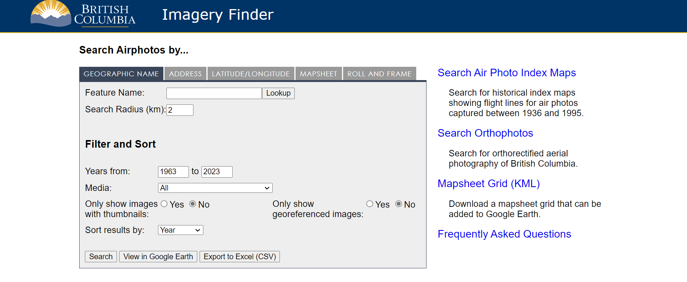

Lab 1 Working with Air Photos
Written by Hana Travers-Smith
Lab Overview
The Geographic Information Centre at (GIC) (http://gic.geog.ubc.ca/) at UBC hosts the largest collection of aerial photos from British Columbia, and provides the public with services for accessing those aerial photos. It is also home to the University Aerial Photograph Collection, which consists of over 2 million air photos. In our labs will be using some photos from the GIC.
For this lab it is recommended that you download Google Earth to your laptop or tablet.
Learning Objectives
- Understand map scales and relation to ground area
- Learn techniques for identifying land use and land cover on aerial photography
- Practice georeferencing imagery in ArcGIS Pro
Task 1: Measurements from air photos
The GIC aerial photo collection includes federal, provincial and private air photos dating from 1922 for many areas in BC and some parts of the Yukon. The photos form a historical collection, mainly covering urban areas, although many rural regions have some coverage. While the majority of the air photos held by the GIC are vertical black and white photos, some color and oblique air photos (from the mid-1940s) are available for selected areas in BC. The standard format for a vertical aerial photo-graph contact print is 25 cm x 25 cm (10” x 10”). Photos obtained by the government for regular inventory programs are typically provided at scales of 1:15,000 to 1:40,000. Each photo is cross-referenced to an index map or flight report that indicates the flight path, flight altitude, date, and time of exposure. The air photographs are filed according to air photo roll numbers and are located in compact storage units.
Each file is coded by flightline following this format:
- BC or BCB (B added after 1989) = British Columbia government, black and white
- BCC = BC government color (after 1970’s)
- A = Federal government
and then by a 4 or 5 digit number (after 1977, the first two numbers correspond to the date of the photography), then a roll number circled for every 5th or 10th photo. All photos are numbered se-quentially, usually from 001, and increase in the direction of the flight. Sequential numbers (e.g. 009, 010) along a flight line indicate stereo pair coverage, meaning that the photos have 60% overlap and can be viewed in 3D.
Step 1: First, we will practice finding air photo metatdata (i.e. information relating to location, map scale, year of acquisition etc..) from the GIC website: http://a100.gov.bc.ca/pub/wimsi/AirphotoSearch

Pick one of the air photos from the “Urban” category.
Navigate to the Roll and Frame tab and search for the photo using the photo roll frame series and frame number found on the top right of the photo. Select View in Google Earth - this will automatically download a kmz. file to your computer. Click on the file to open it in Google Earth. The .kmz will show you the location of the air photo. Clicking on the camera icon will show metatdata related to the photo.
If you do not have access to Google Earth you can get the lat/long of the photo using the Search button instead. You type these into Google or Bing Maps on your device to get the location of the photo.
Q1. What year was the photo taken? What is the nominal scale of the photo and focal length of the camera?
Q3. For each of the following scales, what is the equivalent ground area in hectares (ha) for a region covering 5”x 5” (Hint: 1” = 2.54 cm; 1 ha = 10,000 m2): 1:10,000. 1:12,000, 1:30,000
Step 2: The following equation is used to calculate the nominal scale of an air photo.
\(\ S_{p} = f/(H-h_{avg})\)
where f is the focal length of the camera, H is the height of the aircraft above sea level and Havg is the average elevation of the terrain in the photo.
For example: If f = 305 mm, H = 7000 m, havg = 700 m
\(\ S_{p} = 0.305 / (7000 - 700)\)
\(\ S_{p} = 0.00004841\)
Note for the above calculation we first convert focal length in mm to m.
Next to get the nominal scale in terms of 1:XXXX we need to convert 0.00004 to a fraction.
First, rewrite 0.00004 as 4/100000. (i.e. put the 4 in the numerator and then a 1 with the same number of 0’s as decimal places in the denominator).
Then divide 100,000 by 4 to get the nominal scale of 1:25000.
Answer the following questions for the air photo pair: BCB93024 124 and BCB93024 123
Q4. What year were the photos taken? What is the focal length of the camera? What is the scale of the photos?
Task 2: Interpreting air photos
Step 1: Select an air photo pair with mountainous topography. Get your TA to help you view them in 3D using the stereoscope.
Q8. Using the air photos and Google Earth as a reference, try to recreate the topography in the Virtual Sandbox. Include a photo of one of the air photos and a photo of the sandbox in your final deliverables.
Step 2: Select an air photo with urban/natural features. Note the roll and photo numbers.
Task 3: Georeferencing
In this task you will learn how to integrate air photos with other spatial layers in a GIS. To do this we need to add spatial reference information to the digital image so that it can be displayed correctly on a map and be overlaid with other data sets. In this process you will identify common features between a base map whichhas spatial reference information, with the air photo, which does not. A geogeaphic transformation will be used to align the points in the basemap with the air photo and assign a spatial reference. Because the air photo was taken in the 19XX’s some landscape features are expected to change, so we will have to carefully select features that have not changed over time! Some good examples of stable control points might be:
- intersections of major roads
- airport runways
- buildings, piers, bridges, other permanent structures
- the centres of deep lakes
- easily identifiable natural features, islands, spits
Some examples of not so good control points might be river banks, trees, the shorelines of shallow lakes, as these features are more likely to change or be difficult to identify in two images.
You can read more about the process of georeferencing here: https://pro.arcgis.com/en/pro-app/latest/help/data/imagery/overview-of-georeferencing.htm
Step 1: The file XXXXX.tif is a high-resolution digital scan of photo XXXXXXX. Create a new project in ArcGIS Pro and open a New Map. Drag and drop the air photo into ArcGIS Pro. Notice that because there is no coordinate information associated with the image, ArcGis plots the photo at the coordinates 0.0S, 0.0.0E.
First, set the cooridnate system of the Map to NAD 1983 UTM Zone 10. Right click Map in the Contents Pane > Properties > Coordinate Systems.
Step 2: In the Map Pane navigate to the corresponding region shown in the air photo. We will be using the basemap in ArcGIS Pro as the reference imagery. In the top Ribbon select Map > Basemap and change the basemap to Imagery or Imagery Hybrid.
On the top ribbon go to Imagery > Georeferencing > Fit to Display. This will plot the air photo in the Map pane. Next, use the Move, Scale and Rotate tools to approximately line up the air photo with the underlying basemap. Be sure to zoom in and try and identify common features between the air photo and the basemap. Note, this will not result in a perfect fit, but try and get reasonably close. When you done, click on the map outside the air photo to close the Move, Scale, Rotate tools.
Step 3: To georeference the image we will be adding control points in the reference basemap and finding the corresponding points in the air photo. In the example below we will use XXXX as the first control point.
Turn off the air photo layer in the Contents pane. Zoom in on the basemap to the control point. On the top ribbon choose Add Control Point. Click on the basemap to set the source location, next turn on the air photo and click on the corresponding location on the air photo to set the target location.
Remember, Source = reference basemap and Target = air photo.
Repeat this process and set 4-5 more control points. Try to distribute them across the entire image, a good practice is to try and choose points in each of the four corners and one or two in the centre of the image.
Step 4: You need a minimum of three points to apply a geographic transformation. The transformation will automatically warp the air photo to try and minimize the distance between the source and the target locations of each control point.
Click Transformation on the top ribbon and select First Order Polynomial > Apply.
Examine the Control Point table. For each control point Residual X indicates the difference in m between the source and target in the X direction after applying the transformation and Residual Y indicates the difference in the Y direction. The overall error is shown in the pop-up menu on the Map where Forward error is average difference in meters and Inverse is the number of pixels.
To reduce error we can add more control points to the map, delete points with high error or change the transformation type. Add 8-10 control points (total), aim for Forward RMS less than 15 m.
Q11: Once you have achived a Forward RMS < 15 m. Take a screenshot of your Control Point table and include it in the final deliverables.
Step 5: To save the georeferenced air photo click Save and close the Georeferencing menu. You will now be able to overlay the air photo with the reference basemap and any other spatial data.
Find a region on the air photo where landcover has changed over time, this could be through urbanization, clear cuts etc. Zoom in and adjust the transparency of the air photo in the Appearance menu so that you can see the modern imagery underneath.